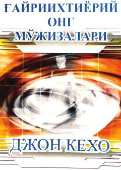

GOOng osti imkoniyatlarini rivojlantirish va hayotni ijobiy tomonga o'zgartirish bo'yicha amaliy qo'llanma.
Ushbu kitob inson ong osti salohiyatidan oqilona foydalanish va hayotiy muammolarni hal etish usullarini o'rgatadi. Muallif ilmiy va diniy manbalarga asoslanib, fikrlash jarayoni va moddiy dunyo o'rtasidagi bog'liqlikni tushuntiradi.